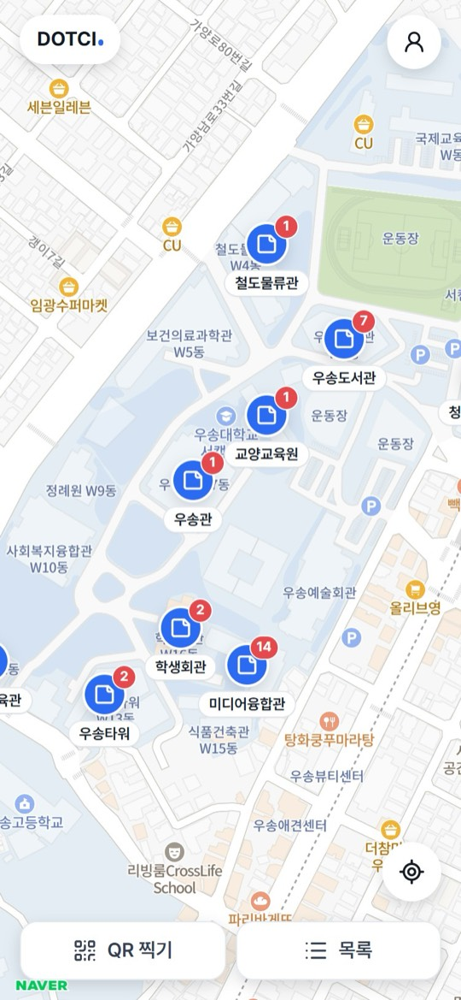
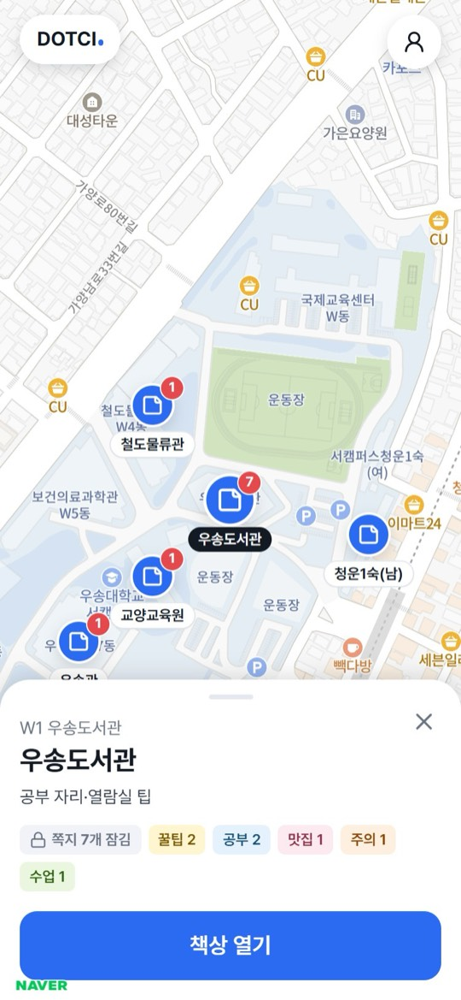
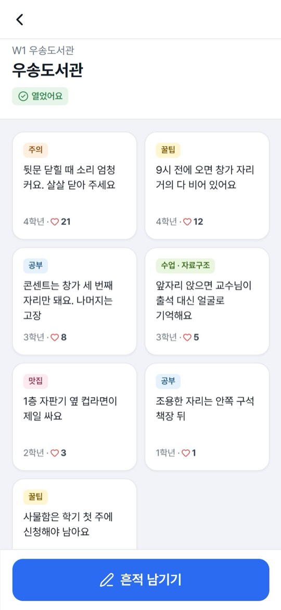
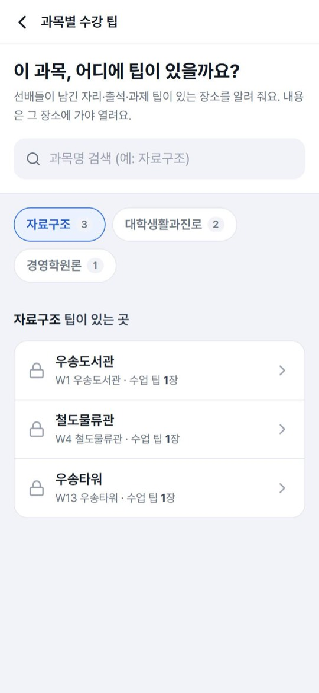
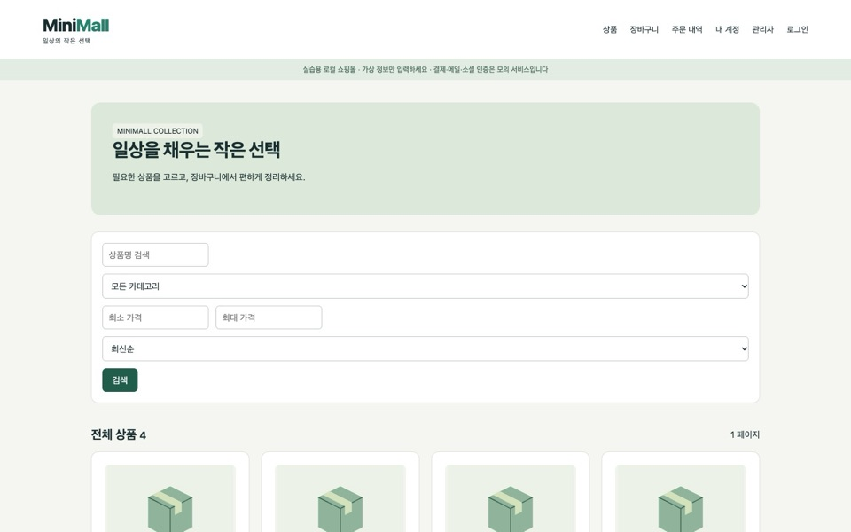

한눈에
- 무엇
- 장소가 곧 검색어인 위치 기반 웹
- 언제
- 2026 2학기
- 내 몫
- UI 디자인 · 사용자 평가 · 발표 (3인 팀)
- 결과물
- 공개 웹 서비스. 캠퍼스 21곳, GPS · QR로 도착 확인
- 상태
- 서비스 공개 중. 우송대학교 비교과 연계 창의융합 협력학습 경진대회 1위
- 21
- 곳우송대 서캠퍼스의 장소
- 2
- 가지 도착 확인GPS · QR
- 200
- 자쪽지 한 장의 길이
- 3
- 인 팀개발 · 디자인 · QA
만든 것





직접 열어 보기
누구나 열어 볼 수 있는 주소만 놓았습니다.
함께
3인 팀으로 만들었습니다. 제 몫은 UI 디자인 · 사용자 평가 · 발표입니다. 화면 속 쪽지는 예시 글입니다.
다음 작품, MiniMall
요구 명세와 시험으로 끝을 재는 수업용 가상 쇼핑몰
